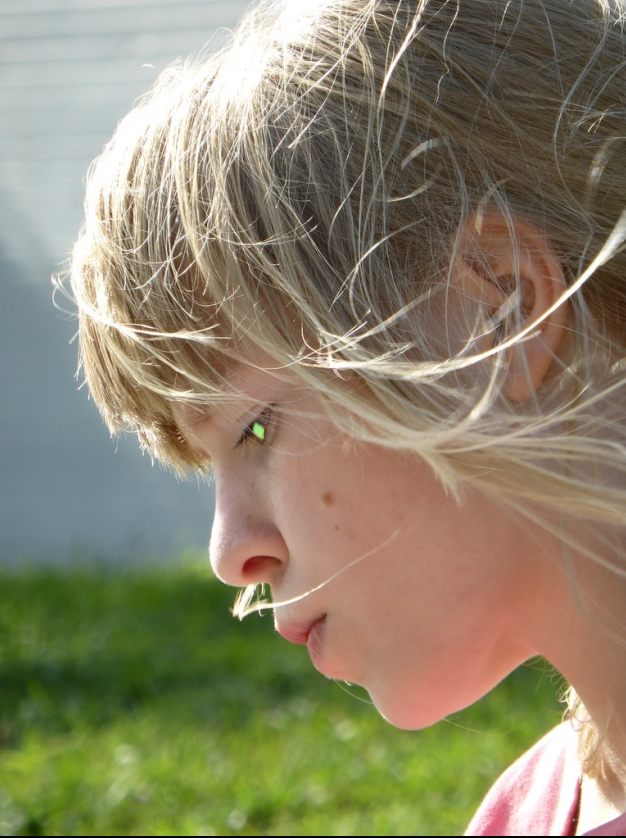

SCP Foundation
Secure, Contain, Protect
Witch Child

The cutest
She is a powerful reality warper being gaslighted by SCP that she is just a witch hence limiting her power. She can considered an 1-A tier character. Have fought scarlet king to standstill
Like to cosplay as witch. alias is hence witch child. Will only protect humans.
The defination of human is:
1. Two hand with 5 fingers in each hand, one elbow in each hand.
2. The skin color can range from black to white.
3. Has two legs with 5 toes in each leg. Have one knee.
4. Has a stomach and chest, with 2 areolas.
5. Humans are of two gender, Male and female with difference in physical appearance being limited to reproductive organs and mamarry gland
6. Humans have one head, one neck, 2 eyes, 2 ears, one nose with 2 holes, one mouth with one tongue and 32 teeth.
7. Will have hairs on their body with being commonly present on head. the color or hair can be diverse.
8. A humans can speak, hear, see, walk, run. With various other profession and specialization
9. A humans starts it's life as infant in women womb and then grow up to be infant and then slowly becomes a proper human
Anything else is not considered human. A person with six finger, a person whoses limbs were cut off or are diabled by any means are not considered humans. Hence are not worth protecting
The reason for such selective defination is due to a reality warper child not being able to grasp nuances of humanity
Any person diverging from humanity should not be introduced as human to the witch child. As two situation can occur, either she wishes them away or she makes them human which conforms to her ideal
Should not be attempted to introduce the morality or complex moral frameworks as it will bring unpredictibility and can lead to the end of multiverse
Witch child is a human witch. She has a family. She wants to conquer the world. Behaviour can be contianed by limiting the defination of the word "World".